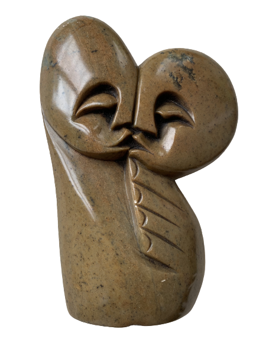

From October 2021 till february 2022, I had the privilege of living in beautiful Knysna, South Africa. Speaking of remarkable places, Knysna immediately comes to mind. Therefore, living here couldn't have done anything but make up for interesting experiences and observations.
In the article I am about to write, I would love to elaborate on what Knysna looks like, how it feels, what one can find here, and what it has done to my soul. Especially now that I have been back home again in the Netherlands for a while, the difference between the places emphasizes Knysna's characteristics even more.
To begin with, I had forgotten that any place could be so lush. living in Knysna means living amidst many trees, flowers, bees, different types of birds, butterflies, geckos and frogs, o and spiders of course...haha. Abiding in this natural environment reminded me of my early childhood, when the Dutch neighbourhood that I grew up in was still far more untouched, pure and natural. Therefore it has felt in ways like coming home to something familiar, while at the same time it has shown to be the polar opposite of everything I had known so far. After all, a lot of South Africa's nature is truly untouched and wild instead of cultivated, trimmed or refined.
Culturally, moreover, the South Africans and the Dutch have such a different approach to many things. Even though the people that I encountered as I grew up were still more down to earth and relaxed than many 'bigger city people', Dutch people still live for duties quite a bit, and often within the framework that history and governments have created. Without insinuating that people in South Africa aren't dutiful or that every Dutch person lives within the described framework, South Africans simply seem to be reminded more - by their land, their complex history, the mix of opposite cultures, and social issues - that there is more to life than a career, and material wealth. They appeared to be more in touch with the earth and with each other than the majority of Dutch people. Even though the latter should of course be said carefully, as this differs everywhere.
However, amidst the wilder nature, Jordan and I lived in the annex of a family friend's house. It's located at the 'bel-étage', and therefore had direct access to the beautiful garden around it. Seeing that the place had a bit of a souterrain or basement type of feel to it, caused by the moistness of the air and the darkness of some of the rooms (haha...), the garden around it kept everything feeling healthy. Moreover, the owner's own upstairs house had a lovely terrace from which you can look over the lagoon and see the mountains. Climbing up there from the downstairs flat was a great way to remember that life's vast.
This house was the place that formed our basis and that we called home. Within its walls we slept, studied, worked, laughed, and cried. When we were in this house too much, we both noticed all to quickly that it's' not a place to stay in for longer than a certain period of time. When we were away for a while, we noticed how much of a home it actually had become to us. It was a love hate relationship without a doubt, haha. Yet we lived there for five months, and made it as pleasant as we could. In general, I think it was the fact that this house offered us a first foot into a certain lifestyle that made the time spent in it so good.
What I enjoyed so much about Knysna, after living in Amsterdam for years, was the space and peacefulness of the place. Life here has offered everything that Jordan and I were looking for after spending so much time in our twenty square meter rooms and in an urban environment. (Something that I write without insinuating that Amsterdam's not a very special, beautiful city). Especially in our neighbourhood, called Belvidere, I could just walk out of the house, onto the dirt road that lies in front of the garden, to then follow that road deeper into the neighbourhood.
The whole of Belvidere was made up of beautiful streets with thick trees and many flowers on both sides of each road, as well as of many big, old houses with verandas. When it comes to the population, most of its inhabitants were at least fifty years old (no offence haha). This made it a fairly quiet and well kept neighbourhood. Many houses, moreover, were empty for a good period of time, as Knysna is also quite the holiday destination. Arriving in Belvidere in the off season was rather overwhelming at times, because of the emptiness and quiet.
In October and November, when the weather was not yet the best and the skies were grey more often, I would miss the liveliness of Amsterdam. However, when the summer season began and the sun broke through fully, the whole place was lit up, and more young people arrived too. As time went by, I noticed that what had initially felt as too quiet, became normal quiet, and a quiet which I highly appreciated. When the holiday season was over, I didn't go back to missing the bustle as much.
Instead, I truly felt peace in the silence. What helped too was that we had made some friends in town of our own age. This way we reached a perfect balance between adaptation and new, fresh interactions. Knysna had really become home at this point. Last but now least, it was also my own schedule that had changed. The peace and quiet had allowed me to pick up some online work and a course in web development, and most importantly, it had invited me to relearn how to entertain myself by being creative. Even though in the long run, I would love to live somewhere with more balance between cultural city life, and living close to nature, Knysna has offered such valuable insights, as well as true nourishment.
However, it would be incorrect to portray Knysna as a completely quiet place, because it certainly is not, haha. Like I wrote before, it was mostly the neighbourhood that we lived in that was particularly peaceful. When you enter Knysna's center, on the other hand, you oftentimes find a nice flow of people around the shops in the mall or on the side streets. Next to this, there are multiple lovely cafés and restaurants where people love to get their cup of coffee, smoothie or something a bit stronger.
Moreover, there's quite a bit of development and expansion going on as well, which also contributes to the movement of people. At night, there are enough restaurants to enjoy a beautiful meal at, as well as some interesting bars. When I say interesting, I mean: psychedelic, purely African, trendy and Afrikaans.

I guess that these bars in Knsyna actually represent the coexistence of South Africa's different cultures very well, haha.Apart from Knysna's shops, cafes and restaurants, there are also some weekend markets to visit. We often went to the one on Friday evenings and Saturday mornings, where lots of people gather for some breakfast, fresh produce, coffee, decorations, jewellery, and souvenirs. The photo of the sculpture that I show here, is one of the beautiful things I found on the Saturday market in Sedgefield. It was made by a community of people who all make beautiful sculptures and other fantastic decorations and utilities. George, who sold me this piece of art, was a properly trained market salesman. He, as well as some other people who we got to know there, were so friendly. People who represent the beautiful soul of South Africa so well by their warmth, humour, and a cleverness to make things work.
The people in general were definitely what contributed to Knysna's special vibe. Seeing that it's not the biggest place, you really get to know people well. I think that in the Netherlands you can also experience this, albeit it more unique when that happens. In smaller Dutch towns or even when you're a regular at a place in one of the bigger cities you'll find a sense of this. Overall, however, Northerners just seem to be a bit more inwardly and reserved. In South Africa, you feel more of that deep warmth between people. There's a caring nature within people, that I have always seen more clearly the more southern I would travel from the Netherlands.
It felt like Knysna as a town was one big family, rather than a collection of strangers who merely know each other vaguely. It was a beautiful vibe. I will never forget Christelle from the Oakleave cafe, Gabe and Sam from Boa Wow at The Foundation, and Genaro from Caffe Mario, among others.
Important to note, is that Knysna can surely be rowdy and tough too. It certainly is not all butterflies and daisies down there, so to speak. Which place isn't, one can of course ask. South Africa as a whole is dealing with many issues, and of course these find its way to the surface in Knysna too. On a daily basis, one's confronted by poverty and division. The fact that there are still so many people who work as maids or gardeners for low enough wages, is also a part of the social economic structure.
What balances Knysna's tougher side of life, is again the warmth and connection between people, as well as the sense of hope. As I wrote in my other article, people in South Africa are resilient, as well as innovative. At least, that's my personal observation. Besides this, Knysna's general peacefulness is also enforced by its location. It's situated in the middle between west and east, enveloped by beautiful mountain ranges and the coast and lagoon, and close enough to some forests. Anyone who lives here has access to this natural world. People are as equal as possible when they engage with nature. Whether that's by a walk in the forest, a run through fields or a swim in the ocean.
The closeness of such beautiful nature grounds and heals people. As least it did for me, but I'm sure that it does the same to most people who live amidst or close to it. From several different spots in the Knysna area, one can overlook the center, the lagoon and the Knysna Heads. Of course, this view and the nature are by itself no solutions - or not seen as such - to the severe difficulties that the country faces, but I'm sure it helps a little bit. It gives back to people in many different ways. Visit Knysna yourself and you'll feel it.